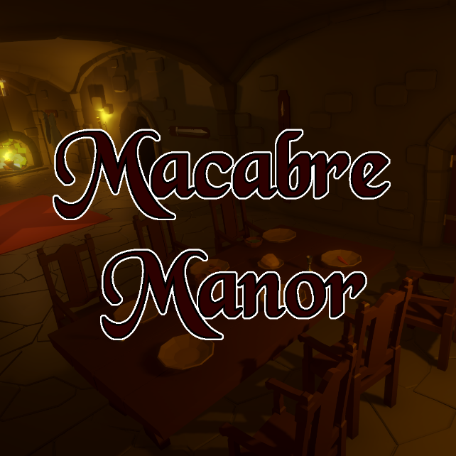

Piebot
Piebot is by far my most extensive project to date. It has been a hobby of mine, and has been a multi-year long journey with two complete rewrites.Piebot is written in Node.JS and is a Discord application, which is often called a chatbot. Discord, for those unaware, is a server-based chatting platform online where communities can form. A chatbot is similar to a user on the platform and can perform actions when a user types a command. Piebot started out as a simple chatbot and has progressively grown over time.
While the first iteration was fairly basic, and frankly a mess, the newest iteration is the most feature complete and organized it has been. My coding skills have grown over the years and it has been translated into making Piebot better, hence the multiple rewrites.
Piebot's strongest feature is its database connection, using MongoDB. The database handles multiple things, one of which is the ability to store unique info for each user on Discord interacting with the bot. It is used to simulate an economy of sorts on the server. The database also allows for users to create custom reminders, of which the bot will remind them at the given time and date. The bot also connects to another version of the bot, PiebotTTV (Made for the platform Twitch), and allows for communication between the two applications.
Unfortunately, it is difficult to demonstrate here, but I have my repo linked in the title.

TETRIS
For my CS151 Final Project, I (alongside Davin Lewis) made TETRIS in C++ using sfml. The final project was to create a graphics based game, and my friend and I decided that it would be fun to try and make Tetris. It was a pretty big task, with our final project the previous semester being only a text-based battleship game. This massive leap in scope was definitely noticeable, but it was a lot of fun to be able to create an actual visible, usable piece of work. Seeing it evolve over time as we got closer to finishing was very rewarding and it is a project that I look back very fondly on.Knockout City Catalog
This is a website I developed completely in my free-time as a hobby. During this time, there was a relatively small game out known as Knockout City. The game was a lot of fun and it was something I was very into. A big part of the game were the unlockable cosmetics you would earn through playing. There were quite a lot of them to get, and there was no official list given by the developers. So, I took it into my own hands and made my own catalog of sorts. It was the first extensive web-development work I've done, and I think it came out really nicely. There are many, many pictures all visible fairly easily, and it is all organized in a clean manner. There is also javascript on the outfits page to change between body types that the outfit is viewed on. Unfortunately the game was shut down, and the website is long outdated, but it was still really cool to work on.
Macabre Manor
During the early spring semester of 2023, my friend and I decided to participate in the Brackey's Game Jam. This event is basically a competition where people can, either alone or with some friends, attempt to develop a game in a fairly short amount of time. The game is required to fit a specific theme given by the jam. Not only are we pretty amateur game developers, but we are also students with limited time, so I am pretty proud with what we were able to create.Bullet Blitz is a wave-based survival game where the only goal is to dodge the obstacles and survive as long as you can. It obviously is not a very extensive game, but I think it actually turned out really fun. The theme of the jam was "Different every time", and so we randomized the player stats at the beginning of the game. That way, each game, things were just a little different. I think, had we had more time, it could have been fleshed out into a legitimately good game.